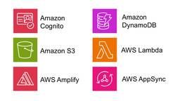

TechHarmony
https://blog.usize-tech.com
TechHarmonyは、SCSK株式会社が運営するエンジニアブログです。SCSKのエンジニア自らがクラウドを中心としたナレッジを積極的にアウトプットすることで社会への還元を行うとともに、更なるスキルアップを目指します。
フィード

サーバレスアーキテクチャにおける Web アプリケーションの実装事例（後編）
TechHarmony
SCSKの畑です。 前回エントリの後編として今回はバックエンド側のサービスを対象に解説します。 前回の記事はこちら サーバレスアーキテクチャにおける Web アプリケーションの実装事例（前編）案件事例に基づく、サーバレス […]
3日前

AWSマルチリージョンにおける高可用性方式（ルーティング切替編）
TechHarmony
こんにちは、SCSKの茂木です。 前回ご紹介したAWSマルチリージョンにおける高可用性方式で記事に書ききれなかったルーティング切替の実装について、 今回は詳しく解説していきます。 AWSマルチリージョンにおける高可用性方 […]
5日前

AWS CDKのコンストラクトとは？
TechHarmony
はじめに 皆さん初めまして。長谷川です。 1本目の投稿になります。 突然ですが、皆さんはAWSのリソース構築をどのように行っていますか？ AWS CloudFormationをはじめ様々なIaCツールが活用できるAWSで […]
6日前

OSパッチ適用結果をメール通知してみた
TechHarmony
前回投稿した「OSパッチ適用を自動化」させた後、結果をメールに通知させる方法をまとめてみました。 OSパッチ適用を自動化させる方法はこちらをご参照ください。 AWS Systems Manager の Patch Man […]
6日前

クラウド初学者が考える基本設計書目次サンプル
TechHarmony
お疲れ様です。 今回で2本目の投稿となります。今年に入ってから、クラウド技術への関心を深めています。昨年度までは主にオンプレミスシステムを担当しており、クラウドに触れる機会はほとんどありませんでした。最近はクラウド技術に […]
6日前

サーバレスアーキテクチャにおける Web アプリケーションの実装事例（前編）
TechHarmony
SCSKの畑です。 今更感はあるのですが、今回はこれまでの投稿で取り上げてきた Web アプリケーションのアーキテクチャについて、改めて概要や各サービスの役割などを記載していこうと思います。正直、最初の方の投稿で先に説明 […]
6日前

なぜサイオステクノロジーは災害対策(DR)に対応した「Disaster Recovery add-on」の提供を開始したのか！？
TechHarmony
こんにちは。ＳＣＳＫ 池田です。 まだ２月だというのに、少し気の早い春を感じるようになってきた今日この頃ですが皆様いかがお過ごしでしょうか。 早速本日のお題です。 少し時間が経ってしまいましたが、昨年9月にリリースされた […]
7日前

Raspberry PiでWebサーバ(冗長構成)を構築
TechHarmony
SCSK 岩井です。 今回はRaspberry Piを2台使ってWebサーバの冗長化を行ってみたいと思います。 ただWebサーバを冗長化するだけではなく、WebサイトとLED点灯/消灯を連動させてみたいと思います。 ちょ […]
7日前

AWS環境でのLifeKeeperを用いた災害対策！Disaster Recovery Add-on 構築＆機能検証
TechHarmony
LifeKeeper記事では、前々回DRBD×LifeKeeperの組み合わせの製品と性能についてご紹介しました。 第10回 DRBD × LifeKeeperの高可用性リアルタイムレプリケーションを探る – TechH […]
8日前

MySQL 非同期レプリケーションを構築してみた
TechHarmony
本記事は 新人ブログマラソン2024 の記事です。 こんにちは。2024年度入社の野上です。 以前、MySQLの初心者ながらレプリケーション方式をまとめた記事を投稿させていただきました。 今回は、以前まとめた方式の中で一 […]
9日前
Amazon Athena に取り込んだデータを Amazon QuickSight で可視化してみた
TechHarmony
前回、AWS Glue と Amazon Athena でS3上のデータを読み取ることができました。 Amazon Athena + AWS Glue で Amazon S3 上のデータを読み取る – TechHarmo […]
9日前
Zabbix 7.2で追加された新機能4選
TechHarmony
こんにちは。SCSK株式会社の上田です。 2024年12月10日に、ポイントリリースバージョンであるZabbix 7.2がリリースされ、Zabbix7.0 LTSには無かった新機能が追加されました！ 今回は、追加された新 […]
9日前
aws-amplify の SSR (Nuxt3) 対応についての補足
TechHarmony
SCSKの畑です。10回目の投稿です。 今回は6回目のエントリで記載した、aws-amplify のSSR (Nuxt3）対応の詳細もとい補足について記載します。小ネタです。 対応の背景などは同エントリに記載しているので […]
9日前
AWS Site-to-Site VPN 接続を検証してみた
TechHarmony
こんにちは、SCSKの内ヶ島です。 オンプレミス環境から手軽にAWS Site-to-Site VPN接続の検証環境を構築する方法を紹介します。 この記事では、CloudFormationを使った環境を一括管理し、Ama […]
9日前
【初心者向け】PartyRockに理想のデートプラン考えさせてみた。
TechHarmony
こんにちは、佐藤と申します！ 今回が記念すべき初執筆！ ということでつたない点もあるとは思いますが、少しでも面白いと思っていただける記事を書けるよう頑張ります！ さて、今回は昨年末のAWS re:Inventにて、202 […]
9日前
【緊急】Zabbix の脆弱性情報 CVE-2024-42330 (CVSS 9.1)
TechHarmony
こんにちは。SCSK株式会社の上田です。 Zabbixに関する、深刻な脆弱性が発表されました。 この脆弱性は、Zabbixのバージョン5.0.45、6.0.33、6.4.18、7.0.3までのバージョンに影響します。 Z […]
9日前
Web サイトパフォーマンス・チューニング
TechHarmony
はじめに いきなりですが、パフォーマンスチューニングの極意からお話しましょう。 パフォーマンスチューニングとは、「一定の制約の中で、希望の結果を選び取ること」と考えると、我々人類が日々行っている生存競争と何ら変わりがあり […]
9日前
DeepSeekｰR1 を Amazon EC2 で動かす
TechHarmony
どうも、DeepRacer をやっていて強化学習のイメージがつくので良かったなと思っている寺内です。 2025年1月20日、中国の杭州にあるスタートアップ「DeepSeek」がChatGPT o1に匹敵する性能を持つLL […]
9日前
AWS Amplify + AWS CDK で人生初のアプリケーションを作ってみた (第3回)
TechHarmony
こんにちは。SCSK渡辺(大)です。 運動不足のせいなのか疲れが取れにくくなってきました。 ストレッチとウォーキングから始めて、徐々に体力を付けないといけないな、などと考えていたはずが、 気が付いたら椅子に座ってPCを開 […]
9日前
Datadog Learning Center でモニタリング事始め
TechHarmony
本記事は 新人ブログマラソン2024 の記事です。 こんにちは。部署配属から4ヶ月が経ち、新人と名乗れる期間も少なくなってきていることに気づきました、SCSKの さと です。 最近、Datadog Learning Ce […]
9日前
AWSを活用したアドホックデータ分析入門
TechHarmony
膨大な構造化データ、半構造化データを抱え、その中から必要な情報を素早く分析したい。でも、システムに組み込むような本格的な分析ではなく、アドホックに分析したい。そんな時、一体何から始めたら良いのか途方に暮れた事はありません […]
10日前
【Catoクラウド】最新版！モバイルユーザのIPアドレス割り当て方法
TechHarmony
2024年12月からモバイルユーザのIP割り当て方法にアップデートが加わりました。 今回のアップデートでより柔軟な設定ができるようになりましたのでご紹介します。 おさらい ～モバイルユーザのIP割り当て方法～ Catoで […]
12日前
IT運用の初心者がITILについてまとめてみた
TechHarmony
本記事は 新人ブログマラソン2024 の記事です。 お久しぶりです。 USiZEサービス部の新人、織田です。 今回は「ITIL」についてまとめた記事です。ITILとは、簡単に言うと「IT運用の指針を提供してくれるフレーム […]
12日前
Amazon Bedrock を使って LINE にブログ記事の要約を送る仕組みを作成してみた
TechHarmony
こんにちは、テクノロジーサービス部の大西です。 RSSフィードで取得した記事を要約し、自分のLINEアカウントに送信するシステムを構築しました。 今回対象にした技術ブログは本サイトであるTechHarmonyであり、SC […]
12日前
Amazon CloudWatch Logs の Amazon S3 へのエクスポート方式の検討
TechHarmony
Amazon CloudWatch Logs を Amazon S3 にエクスポートする方法について、2つの構成を検討しました。 それぞれの構成にどのようなメリットや課題があったのか考察しておりますので、AWSでのログ収 […]
13日前
Azure上の構築済みリソースをTerraformで自動的にコード化してみた
TechHarmony
今回はAzure上に構築済みのリソースを自動でコードに落とし込み、Terraform上で管理できるようにし、コードによってパラメータ変更ができるようにする方法について紹介したいと思います。 事前準備 Terraformの […]
13日前
【Catoクラウド】新機能「AIアシスタント」がリリース
TechHarmony
こんにちは、Catoクラウド担当SEの中川です。 Catoクラウドより、2025年1月6日のアップデートにてAIアシスタントがリリースされました。 このAIアシスタントは、Catoの情報に特化した生成AIです！ 主にCa […]
13日前
Amazon Nova Canvas で画像生成してみた
TechHarmony
近年、AIを活用した画像生成技術が飛躍的に進化しています。その中で、Re:Invent2024で発表されたAmazon Bedrockの新しい画像生成モデル「Amazon Nova Canvas」は新たな選択肢として注目 […]
14日前
Amazon Nova を触ってみた (テキスト生成編)
TechHarmony
昨年のre:Invent 2024にて、Amazon Bedrockでのみ利用可能なモデルとしてAmazon Novaが発表されました。 本記事では、Amazon Novaシリーズの中でテキスト生成が可能な3つのモデルに […]
14日前
初心者による初心者のためのGitHubコード管理
TechHarmony
こんにちは。新人の加藤です！ 前回投稿時は絶賛研修中でしたが、現在は初めての案件に入り、日々精進しております。 案件では、クラウドのリソース管理をIaC上で行っており、コードも含め全てGitHub上で管理を行っています。 […]
14日前
AWS Amplify + AWS CDK で人生初のアプリケーションを作ってみた (第2回)
TechHarmony
こんにちは。SCSK渡辺(大)です。 ゴールデンウィークに大阪万博に行くことが決まりました。 ３Dのクラゲに触れることができ感触を味わえるらしいので楽しみです。 今回は、AWS Amplify+AWS CDKで人生初のア […]
15日前
Microsoft Teams の便利機能紹介
TechHarmony
本記事は 新人ブログマラソン2024 の記事です。 こんにちは。新人の曲渕です。 今回の記事ではタイトルにあります通り、Microsoft Teams の便利な機能についてご紹介させていただきます。業務で使うことが多いの […]
15日前
第11回 Amazon EBSマルチアタッチ機能をサポート （ LifeKeeper for Windows v8.10.2 ）
TechHarmony
皆様ご無沙汰しております。ＳＣＳＫ LifeKeeper担当 池田です。 最近は、ニューフェイスの勢いに押され気味でしたが、負けじと頑張りたいと思います！ さて、今回はWindows版のLifeKeeperとして先月(2 […]
15日前
Google Workspaceの監査ログ 保持期間延長方法 ～BigQueryへ転送～
TechHarmony
こんにちは。SCSKの磯野です。 Google Workspaceの監査ログは、保持期間が6か月程度のものがほとんどです。 例）SAML のログイベント データ：6か月 データ& […]
15日前
事前認証が必要なアプリケーションにおける初期化処理の実装でハマった話
TechHarmony
SCSKの畑です。9回目の投稿です。 今回は、6回目のエントリで少し言及したアプリケーションの初期化処理について、詳細について記載してみます。 アーキテクチャ概要 そろそろ食傷気味かもしれませんがいつもの図を。今回はほと […]
16日前
Rubrikのランサムウェア対策：仕組みとシミュレーションで確認
TechHarmony
本記事は 新人ブログマラソン2024 の記事です。 こんにちは！SCSKの新人、黄です。 前回の記事では、Rubrikというバックアップデータ管理に特化したIT企業と、その主要製品や機能についてご紹介しました。 多くの方 […]
16日前
AWS User Notificationsをテストしてみた！
TechHarmony
本記事は、「AWS User Notifications で EC2 の AWS Health イベントを通知してみた！」の続編となります。 前回の記事で実装したAWS User Notificationsをテストするた […]
16日前
【ServiceNow】UI Builderを使ってみた
TechHarmony
ServiceNowのUI Builderを触る機会があったため、一部ですがその機能を紹介させていただきます。 本記事は執筆時点（2025年1月）の情報です。最新の情報は製品ドキュメントを参考にしてください。 UI Bu […]
16日前
Amazon Cognito 認証の AWS AppSync で特定のユーザーグループのみに実行許可する Lambda リゾルバ
TechHarmony
こんにちは、広野です。 AWS AppSync は Amazon API Gateway と同様に API を公開してくれるサービスですが、必ず何かしらの認証がないと動かないサービスです。私は Amazon Cognit […]
17日前
新米エンジニアが挑む！Snowflake CortexAIでドキュメント検索アシスタントを構築してみる【新しいドキュメントの自動処理】
TechHarmony
本記事は 新人ブログマラソン2024 の記事です。 皆さんこんにちは！入社して間もない新米エンジニアの佐々木です。 前回、前々回と2回に渡って、Snowflake CortexAIを使ってドキュメント検索アシスタントを構 […]
17日前
Mackerel で Docker を監視してみた
TechHarmony
こんにちは、SCSK株式会社の嶋谷です。2024年度入社の新入社員です。 現在私は、AIプラットフォームやWebサーバ・監視サーバの構築といったインフラ基盤の構築業務に携わっています。 今回は、Docker上に構築したA […]
20日前
AWS Amplify が生成した AWS AppSync リソースの手動移行に関する備忘録
TechHarmony
SCSKの畑です。8回目の投稿です。 今回は、初回のエントリで少しだけ触れた、AWS Amplify が生成した AWS AppSync リソースの手動移行に関する備忘録のような、Tips のような内容になります。如何せ […]
20日前
CASBの制御って何をしたらいいの? ～ルールの設定例
TechHarmony
企業ネットワークにおけるクラウドサービス利用のリスク対策として、Cloud Access Security Broker(CASB)の導入が増えています。 CASBは「可視化(Visibility)」「アセスメント(As […]
20日前
Amazon Athena + AWS Glue で Amazon S3 上のデータを読み取る
TechHarmony
Amazon Athena と AWS Glue を使用して、Amazon S3 上にある CSV データに対してクエリを実行してみたので、その手順をまとめます。 AWS Glue とは AWS Glueは、Amazon […]
21日前
AWS CloudFormation で Amazon EventBridge から Amazon CloudWatch Logs へのログ転送でハマった話。
TechHarmony
こんにちは。ひるたんぬです。 本年もよろしくお願いいたします。今年は巳年ですね。 小さい頃に「十二支は神様の号令の下、競争して早い順に決まった」と言われた記憶があるのですが、実際に本当に早い順に十二支を並べるとどのように […]
22日前
Amazon Redshift Serverless のコンピューティングキャパシティについて考える
TechHarmony
みなさん、Amazon Redshift Serverlessを使ったことはありますか？ プロビジョンドタイプと異なり、サーバレスの強みを生かした高可用性、高スケーラビリティ、コストメリット有りと使いやすさ抜群のサーバレ […]
22日前
2024年度クラウド人材研修を終えて
TechHarmony
こんにちは、2024年度入社の秋葉です！ 2025年の1月14日を持ちまして、約３ヶ月のクラウド人材研修が終了いたしました。 クラウドは利用しているけど、”クラウド人材研修”って一体何？と疑問に思 […]
22日前
AWS Systems Manager の Patch Manager で OS パッチ適用を自動化してみた
TechHarmony
AWS System Manager (SSM) の Patch Manager 機能を利用すると、OS パッチ適用を自動化できるそうです。 すごく便利だと思ったので、設定手順をまとめてみました。 アーキテ […]
22日前
Azure Spring Apps を試してみた
TechHarmony
こんにちは、冨岡です。 私は12月までAWSの研修を受けていました。 今では案件に入り、私の社会人生活が始まった気がします。 しかし私が扱うのはAWSではなく、なんとAzure。 心を入れ替えて頑張ります！ はじめに 私 […]
23日前
AWS AppSync + AWS Lambda 構成におけるペイロードサイズ低減の試み
TechHarmony
SCSKの畑です。7回目の投稿です。 今回は小ネタ・・のつもりだったのですがいくつか加筆していたらそれなりの分量になってしまいました。内容は正直タイトルから大体想像付くところだとは思うのですが、ご了承ください。 アーキテ […]
24日前